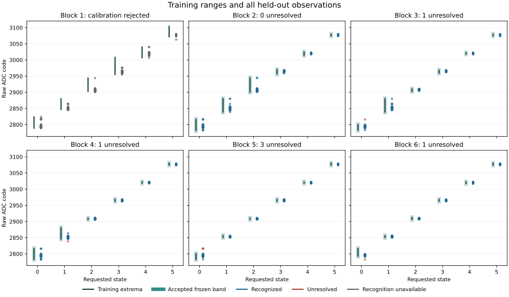
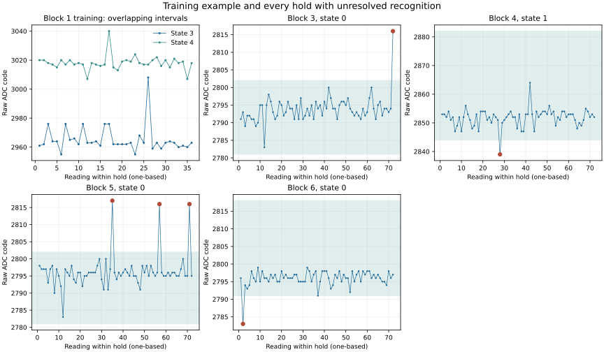

Question and rationale
How do reported ADC codes vary during consecutive acquisitions at an unchanged six-state control request, and do the existing training bands cover longer held-out sequences?
The completed transition series retained unresolved readings in unchanged-state and held-state observations. In boot 2, a high reading at the 33rd consecutive training acquisition contributed to overlapping adjacent calibration intervals. Boot 3 retained three unresolved readings after an omitted-trigger sequence. These findings do not identify transition settling as the sole cause. This investigation extends consecutive acquisition while retaining the established control range, ADC operation and recognition rule.
Declared method
One characterization boot on the same apparatus, with six blocks and 3,888 observations: 1,296 training and 2,592 held-out observations. All values below are decimal unless explicitly prefixed. Keep control codes 90, 93, 96, 99, 102 and 105, the two-count calibration guard, 1,000 microsecond programmed pre-ADC delay, operating limits and transport deadlines. No additional PMIC register operation is introduced.
| Phase | Holds | Consecutive readings per state | Purpose |
|---|---|---|---|
| Training | Six states | 36 | Retain extrema and construct the block's bands |
| Validation | Six states | 72 | Assess longer sequences against frozen bands |
Zero-based even blocks train in state order 0, 1, 2, 3, 4, 5 and validate in order 3, 4, 5, 0, 1, 2. Odd blocks train in order 5, 4, 3, 2, 1, 0 and validate in order 2, 1, 0, 5, 4, 3. The three-position rotation makes every adjacent hold request different, including the training/validation boundary. Directions alternate deterministically; they are not randomized or sufficient to separate state, position and time effects.
Keep the request unchanged throughout each hold. The voltage operation reads the control before and after every acquisition; it writes only when establishing a changed request. The first reading remains part of the hold, including its possible transition behavior. No warm-up or first-reading exclusion is applied. Seventy-two validation readings give twice the consecutive span of each training hold; this is a bounded characterization length, not a statistical power calculation.
Every observation uses the existing clear-and-trigger ADC mode: retain reset/configuration, preliminary status clearing, conversion-trigger submission, bounded polling, two result-pair reads and cleanup/status readback. Omitted-trigger observations are absent from this sequence. The preceding retention tests remain the evidence for that distinct operational relation.
After all six training holds, freeze bands from each state's minimum and maximum with the unchanged two-count guard. Calibration rejection continues raw acquisition with recognition unavailable. Successful recognition receives only the raw code and frozen bands; the requested state is compared afterward. Restore the captured original control after every completed block. Hardware, transport or operating failure preserves the attempted prefix and attempts restoration through the existing guarded path.
Retain control readbacks, both raw result pairs, status octets, polling count, architectural counters, CPU-frequency observations and raw thermal status. The programmed 1 ms delay precedes ADC setup and is not the sampling period. Calculate actual trigger-to-trigger intervals and elapsed time from the first selection readback within each hold. Neither counter identifies the analog sample instant independently.
Predefined assessment
Acquisition and diagnostic integrity: require complete recovery of all 3,888 observations, the exact declared sequence, all six completed block restorations, final restoration and pin-release success, successful samples and operating checks, matching requested/initial/final controls, complete paired result diagnostics and agreement between the two pairs. Every observation must retain status octets 0 → 1 → 0. A missing or failed observation cannot satisfy this criterion.
Coverage under the existing recognition rule: require all six calibrations to be accepted and all 2,592 held-out observations correctly recognized. Report wrong, unresolved and unavailable outcomes separately. A calibration failure is not successful recognition. The combined criterion requires both diagnostic integrity and recognition coverage. Passing this finite sequence would qualify only its recorded conditions; repeated codes are not presumed independent samples.
Descriptive variation: retain every raw observation. For every training and validation hold, report attempted and available counts, the extent of all available raw values, the extent and histogram of diagnostically valid values, consecutive changes, the longest identical-code run, actual trigger-period range and median, and elapsed hold time. Invalid observations break consecutive comparisons. Locate every non-correct held-out observation by block, state, position within hold, raw value, frozen band and elapsed time. Keep rejected calibration extrema visible.
Compare complete sequences with their training coverage without widening bands, replacing failed first readings, discarding early observations or fitting a new recognition rule. Any revised rule must be declared and assessed on subsequent held-out physical data. This boot characterizes variation; it does not independently distinguish electrical variation, sensor behavior, calibration coverage or acquisition-path effects.
Results
Acquisition and diagnostic integrity met the declared criterion; recognition coverage did not. Candidate B0BE330C2B6B returned all 3,888 observations, including 1,296 training and 2,592 held-out readings. The held-out results were 2,154 correct, 0 wrong, 6 unresolved and 432 unavailable. Five calibrations were accepted; the first block's calibration was rejected.
All 3,888 observations retained complete status sequences 0 → 1 → 0, agreement between both result-pair reads, matching requested/initial/final controls and successful operating checks. All six block restorations, final restoration and pin release reported success. These diagnostics establish the observed register-level relations, not independent analog conversion freshness.
| Block | Calibration | Correct | Wrong | Unresolved | Unavailable |
|---|---|---|---|---|---|
| 1 | Rejected | 0 | 0 | 0 | 432 |
| 2 | Accepted | 432 | 0 | 0 | 0 |
| 3 | Accepted | 431 | 0 | 1 | 0 |
| 4 | Accepted | 431 | 0 | 1 | 0 |
| 5 | Accepted | 429 | 0 | 3 | 0 |
| 6 | Accepted | 431 | 0 | 1 | 0 |
Block 2 alone met its full recognition criterion. The unavailable observations in block 1 remain part of the scheduled denominator. No readings were discarded, no band was widened and no classifier was fitted to this return.
{kind=link}

Variation within held requests
Training intervals overlap before the guard is applied
In block 1, state 3 training ranged from 2,955 to 3,008 and state 4 from 3,007 to 3,040. Their two-count guarded intervals were 2,953–3,010 and 3,005–3,042. The raw intervals already overlap; removing the guard would not make this calibration valid under the declared interval rule. The two finite observed value sets share no identical code, which is distinct from interval overlap.
The state-3 maximum, 3,008, occurred at ordinal 133: reading 26 of 36 within that training hold. Requested and both returned controls were 99, and both result-pair reads agreed. This is the same high code reported for state 3 in the second transition boot, where it occurred at a different position within the hold. The recurrence identifies an observation to investigate; it does not establish its electrical or acquisition cause.
Unresolved readings occur early and late in the holds
| Ordinal | Block | State | Reading / 72 | Raw code | Frozen band | Elapsed (s) |
|---|---|---|---|---|---|---|
| 1799 | 3 | 0 | 72 | 2816 | 2781–2802 | 2.509443 |
| 2259 | 4 | 1 | 28 | 2839 | 2844–2882 | 0.974724 |
| 3058 | 5 | 0 | 35 | 2817 | 2781–2802 | 1.218218 |
| 3080 | 5 | 0 | 57 | 2816 | 2781–2802 | 1.985944 |
| 3094 | 5 | 0 | 71 | 2816 | 2781–2802 | 2.474518 |
| 3601 | 6 | 0 | 2 | 2783 | 2791–2818 | 0.066550 |
Three of the six unresolved readings occurred after position 36, beyond the length of a training hold. The latest occurred at reading 72. Every exception retained matching controls and result pairs with successful diagnostics. The complete sequences remain necessary for interpretation; a later correct reading does not replace an unresolved one.
{kind=link}

Measured timing and operating observations
Consecutive trigger periods within holds ranged from 34.839 to 35.068 ms across 3,816 adjacent pairs. A 72-reading validation hold spanned 2.508678–2.512709 seconds from its first selection readback to its final sample completion. The programmed 1 ms wait is therefore a component of the acquisition period, not the period itself.
Acquisition took 136.112747 seconds. The recorded interval from trial start to the final section was 1,117.937563 seconds, approximately 18 minutes 38 seconds, including journal persistence. These counters do not measure the full powered duration. Observed CPU frequency ranged from 1,499,970,782 to 1,500,029,438 Hz; raw thermal-register values ranged from 67,308 to 67,332 and are not presented as calibrated temperatures.
Interpretation
The native execution and recording path preserved all scheduled observations. The current training and recognition method did not establish reliable six-state recognition for this acquisition: one calibration rejected overlapping intervals and six held-out codes lay outside accepted bands.
Repeated acquisition at an unchanged control request still produced variation outside the frozen coverage, including readings well into a hold. An initial-reading discard rule, a wider interval or a revised classifier has not been qualified by this experiment. Widening intervals would also need to address the overlap already present in block 1.
Physical variation, ADC behavior, acquisition timing and calibration coverage remain distinct possible contributors. Matching reads from the same result registers cannot isolate them or prove a fresh analog sample. This single returned acquisition supports further controlled investigation of the measurement relation and replication of the declared sequence; it does not select a revised recognition rule or establish a general warm-up remedy.
Returned evidence and provenance
Two read-only acquisitions of the complete 67,108,864-byte experiment extent matched exactly. All 24,932 occupied journal sectors were recovered without reported issues; 7,772 reservations remained empty. Both boot files were unchanged. Windows reported FAT32 / Healthy / OK, and the examined dirty indicators were absent.
Seven sectors outside the journal differed from the prepared image; their byte differences are retained in the boot-volume assessment. The writer and timing of those changes are not established. No format, repair or SD write was performed during acquisition.
The prescribed procedure was at least five minutes powered off, one uninterrupted 30-minute boot and power off before removal. Actual powered duration and boot count were not separately reported for this return or independently measured. The native counters establish the recorded acquisition and persistence intervals above.
Returned capture SHA-256: 03de861f1e8f2f9aead576a927d90722573e3da55bdfdd7a533b799928d3840a
SEIGRASM execution
The held-request sequence contains 56 literal AArch64 instructions and returns the existing acquisition sequence fields. Acquisition entry 0x30c retains its existing 3,888-row geometry, calibration and restoration. The existing delay operation binds each row's diagnostics and delegates to supervision. ADC mode 1 is fixed in the prepared context; the existing controlled-trigger instructions execute every ADC acquisition. No target compiler or assembler is invoked.
Configuration schema 6 stores the fixed delay, six-state geometry, 36/72 reading counts, order rotation and ADC mode. Diagnostic schema 2 and 64-word rows are unchanged. Row field 5 is the six-reading group within a hold, field 6 the hold position within its phase, and field 7 the reading within that group. Phase 0 is training and phase 1 validation. Absolute position within the hold is 6 × field 5 + field 7.
The return reader reconstructs the schedule and descriptive assessment from saved records. Instruction-execution checks exercise every scheduled position, actual control-write sequences under supplied devices, wrong and unresolved observations, calibration rejection, failure/restoration and connected GPIO/I2C/SD recording. Such checks validate software behavior under supplied responses and cannot provide physical results.
The native SGDATA01 journal requires at most 24,932 of its 32,704 reserved sectors, leaving 7,772 empty reservations. Acquisition retains rows in RAM before streaming them to the SD. Interruption before completion may leave only recorded checkpoints; RAM retention is not persistent evidence.
Interpretation limits
A held request means an unchanged control code verified at observation boundaries; constant physical voltage and absence of intervening interference are not assumed. Raw ADC codes are not calibrated voltage measurements. The two reads use the same result registers and therefore cannot independently prove conversion freshness, analog accuracy or exclusive PMIC ownership.
Target execution remains SEIGRASM-owned after entry. Existing BCM2712 ROM/EEPROM loading and its initial hardware state remain dependencies. This investigation does not replace that firmware, demonstrate a six-level CPU logic element, or complete Hyphos/SeigrOS. It tests the acquisition evidence needed to develop their electrical foundation.
SD preparation and procedure
Candidate B0BE330C2B6B was installed and readback-verified. All 215 supplied-device checks passed with 75 source files unchanged during validation. All 32,704 journal reservations were empty in the prepared image. The pre-write SD backup matched the preserved third transition-boot capture exactly. A reopened-device readback of all 67,108,864 bytes matched the new image. Windows reported FAT32 / Healthy / OK after installation. The complete returned acquisition is assessed above. The returned run is preserved in its evidence archive.
Image SHA-256: fb2f822a212e1e8d94884fff691ef9e2318117c74e30b7490116f95aa2a16fe5
Keep the same power supply and cooling arrangement. Leave the Pi powered off for at least five minutes; ten minutes is suitable. Insert the prepared SD while power is off, then run one uninterrupted boot for 30 minutes. Power off before removing the SD and returning it to the PC. Do not format or repair a Windows-reported volume issue before acquisition.
The 30-minute window includes acquisition and journal persistence. It retains the established procedure and allows for the increased journal size; completion will be assessed from the returned records, not inferred from elapsed wall time.